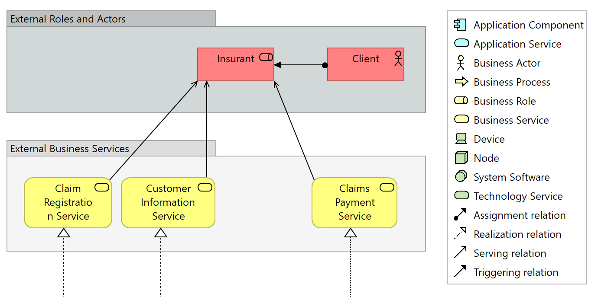

A legend can be included in an ArchiMate View to show all icons and names of the concepts within it. This legend automatically updates whenever concepts are added or removed from the View.
A legend is added from an ArchiMate View's Palette:
The Legend Palette Entry
The following example shows a legend in an ArchiMate View that lists all the concepts present, including their icons and names:
A Legend in an ArchiMate View